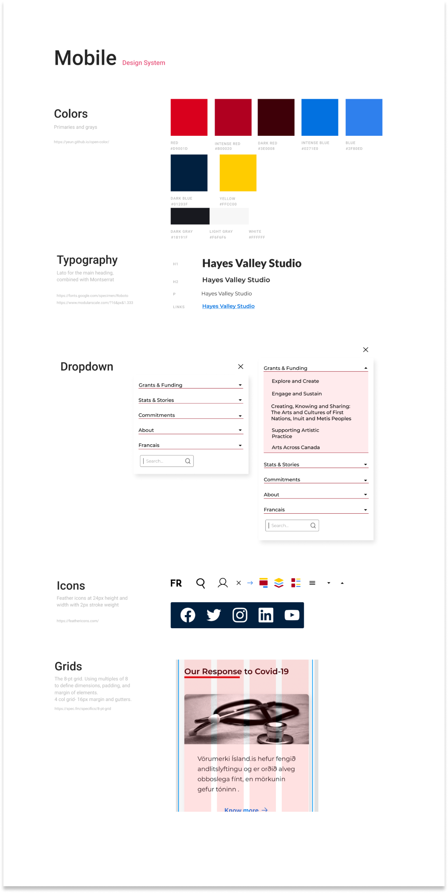

Responsive redesign of the website of the Canada Council for the arts, improving the navigation and the aesthetics for mobile and desktop.
This project is about a responsive redesign of a government agency, the Canada Council for the Arts, which focuses on promoting the arts, supporting artists and organizations around Canada.
I team with two other designers to complete this project to complete the user research phase and receive some later feedback. The process took three weeks to finish.
The website has confusing navigation for users, making it difficult to find essential features such as grants and financing programs. Also, in addition to being an organization created by artists, the visuals display unattractive and straightforward images.
Design new navigation, making it easier for users to take advantage of the options offered by the organization, both through the navigation bar and on the main page, putting relevant content. Also, using brighter colors, respecting accessibility values such as contrast and heuristics.
We start by making a proto-persona or a possible average user of the page. We investigated what the organization offers; we deduced that artists and organizations would be the main interested parties, especially to opt for subsidies.
The second step was conducting a heuristic evaluation, analyzing the homepage based on appearance, content, navigation, and functionality. This process gave us a clue about the points to focus on in the posterior usability tests.
Conduct a usability test was the next step to check how the users interacted with the website. We asked to complete different tasks, like finding the funding options, the online application in the login portal, start a grant application, and find the contact information.
Based on the user's answers, we annotate the usability and heuristic issues of five pages of the organization to guide what we need to improve most. To do that, we started a mood board with some competitor pages, UI elements such as icons, buttons, navigation, and some colors.
After this, we focus on navigation. The page had bugs in its navigation, the most obvious being the one found in the "Portal." users had no way of knowing what it meant, and once they clicked, they had no way of returning to the main page. Another problem we found was that grant options were not easy to come by and understand, which often left users frustrated.
To start looking for solutions, we repeat the redline but focusing this time on navigation, including footer, primary and secondary navigation. After this, we carried out three usability tests focused merely on navigation and how users saw this process.
After I made a classification of cards for three users, the main navigation elements went from six to five. Some parts were reorganized, and others were renamed to make the navigation more precise and intuitive. With the results, we put together the new sitemap.
I started prototyping what the new header and footer navigation would look like for mobile and desktop. I began to create a clickable prototype of the home page, mainly focused on navigation. To test it, first run a five-second test, where users viewed the image for five seconds and then answered questions such as the unique elements on the page, things that would change, etc.
To start including the aesthetic elements, create a style tile, where I began to capture colors, fonts, icons, etc., for reference.
Taking the design to a complete version, move the style guide elements to the home page, making a clickable hi-fi prototype. I performed at least four usability tests on this prototype, iterating the final result multiple times.
To maintain consistency throughout the project, we designed the style guide for mobile and desktop, thus facilitating the work when making new pages and serving as a guide for future developers. In this project, the focus was mainly on heuristics, usability, and navigation. It was challenging as government agencies are very strict about how they do things, but being able to change it by trying to keep the essence was a fun challenge. It is essential to spend time on the research part, as it can save a lot of time later, and consistently seek to corroborate your decisions through constant tests.
